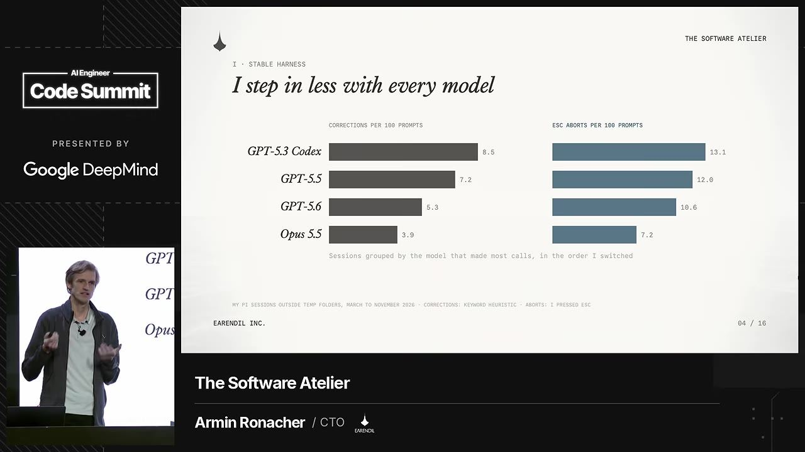
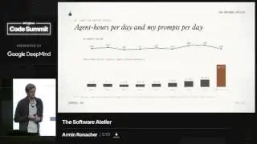
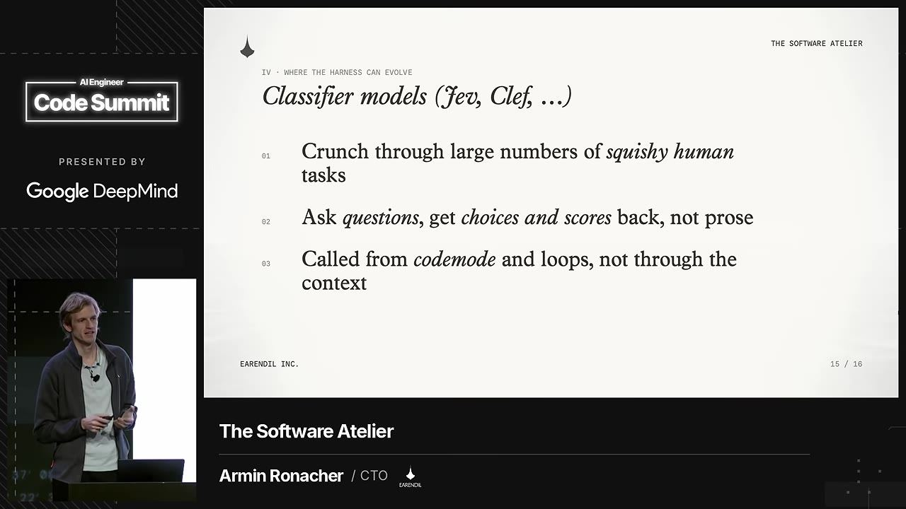

essencial do dia: Traz dados reais de sessões com agente e um critério prático: quando contrariar o agente e quanto do que se começa vale manter.
Oficina antes da fábrica: usar agentes de código com critério
Build the Workshop Before the Software Factory
A atenção humana limita o que os agentes entregam. Monte uma oficina de software excelente antes de uma fábrica que só produz mais código.
Depois deste talk você consegue avaliar o seu uso de agentes de código com métricas simples de correções, duração de tarefa e projetos mantidos
Em 3 frases
Armin Ronacher mostra dados das próprias sessões com o agente Pi. O harness (estrutura que roda o agente) quase não mudou em um ano, mas as correções caíram e as tarefas passaram de 2,5 para 14 minutos no percentil 90.
Ele inicia projetos sem parar, mas só mantém de 10 a 15 vivos. Para ele, a atenção humana segue como gargalo, e saber quando contrariar o agente e entender o que se constrói pesam mais que volume.
Para tarefas longas, ele defende agentes duráveis que suspendem e retomam, e o code mode (o agente escreve código que chama as ferramentas) combinado com modelos classificadores baratos para decidir milhares de casos.
Antes de ler
- Harness estrutura que roda o agente analogia no glossário
- Coding agent agente de código analogia no glossário
- Autoresearch pesquisa automática por experimentos analogia no glossário
- Software factory fábrica de software analogia no glossário
- Durable execution execução durável analogia no glossário
- Sandbox ambiente isolado para rodar o código analogia no glossário
O harness parou, os modelos subiram
O agente Pi tem as mesmas ferramentas de dezembro do ano passado. Mesmo assim, ele faz mais, só porque os modelos melhoraram. Truques de prompt e plugins como o de autoresearch ficaram desnecessários com modelos de ponta. Revise de tempos em tempos o que o seu harness ainda precisa fazer.


(ampliar imagem)Prompts estáveis, tempo de agente explodindo
Armin envia entre 120 e 190 prompts por dia, número quase constante no ano. O tempo em que o agente trabalha para ele passou de menos que a jornada para várias vezes a jornada. A atenção humana não escala no mesmo ritmo, e é ela que limita o que dá para revisar bem.


(ampliar imagem)Começar é fácil, manter é raro
Armin criou 141 repositórios no ano, mas só de 10 a 15 recebem commits regulares. Ele ouviu o mesmo de amigos. Um amigo automatizou todo um projeto open source e depois o desligou, porque deixou de se importar com ele. Automação não substitui o cuidado de alguém.
06:43 141 projetos iniciados, só 10 a 15 mantidos com regularidade.
Mais 2 ideias deste talk
Resumo executivo antes da verificação
Para não perder o controle com tantos commits, Armin pede que o agente produza, por volta de 70% da tarefa e antes da verificação, um resumo executivo curto e uma página HTML bem formatada. Assim ele acompanha o que foi feito sem ler todo o código.
10:21 Um ponto de checagem humano dentro da trajetória do agente.
Code mode e modelos de decisão em lote
Com code mode, o agente escreve um workflow em JavaScript que chama ferramentas sem passar tudo pelo contexto. Cada ponto de decisão pode usar um modelo classificador barato e rápido. Armin cita 3.000 pedidos de suporte triados em pouco tempo, tarefa que antes levaria horas.


(ampliar imagem)Os dados vêm de um único usuário, o próprio palestrante, sem grupo de comparação. A queda de correções pode refletir também o hábito dele. Ele trabalha na Earendil, que faz o agente Pi, então tem interesse em mostrar que o harness simples basta. As afirmações sobre amigos e sobre mais forks no open source são impressões, sem número. O ganho do code mode com classificadores aparece sem medição de custo ou de erro.
Teste você mesmo
Responda de cabeça antes de abrir. Lembrar com esforço é o que fixa.
- lembrar O que mudou no agente Pi em um ano, segundo Armin, e o que explica o desempenho maior?
Ver resposta
O harness central quase não mudou e tem as mesmas ferramentas de dezembro do ano anterior. O ganho vem dos modelos melhores.
- aplicar Como você aplicaria a ideia do resumo executivo em um repositório seu em que o agente trabalha por muitos minutos?
Ver resposta
Escreva no prompt ou no arquivo de instruções que o agente, antes de começar a verificar, gere um resumo curto e uma página HTML com o que mudou e o que ele decidiu. Você revisa isso antes de olhar o diff.
- criticar Que limites os dados de Armin têm como prova de que modelos melhores exigem menos intervenção?
Ver resposta
Vêm de uma só pessoa, sem controle, e o hábito dela pode ter mudado. Armin também trabalha na empresa que faz o Pi, o que cria interesse em mostrar um harness simples.
Meça seus projetos vivos e mortos
Você precisa de: Terminal com git, uma pasta com seus repositórios e Python ou planilha
- Liste os repositórios criados nos últimos 12 meses com git log e a data do primeiro commit.
- Para cada um, conte em quantos dias distintos houve commits e marque os que passam de cinco.
- Calcule a razão entre projetos mantidos e iniciados e compare com os 10 a 15 de 141 do Armin.
- Escolha um projeto abandonado e decida se vai arquivar ou retomar, anotando o motivo em uma linha.
Deu certo se: Você tem uma tabela com projetos iniciados, mantidos e a razão entre eles, e uma decisão registrada para um projeto parado.
O que fazer com isso
- Exporte suas sessões de agente e conte quantas vezes por semana você corrige o modelo. Compare antes e depois de trocar de modelo.
- Liste seus repositórios criados neste ano e marque os que tiveram commits em mais de cinco dias diferentes.
- Peça ao agente, antes da verificação final, um resumo executivo de uma página com decisões, riscos e o que mudou.
- Reveja plugins e prompts auxiliares do seu harness e desligue um por vez, para ver se o modelo atual ainda precisa deles.
Conversa com outros talks
- complementa Como a Cognition multiplicou por 40 os PRs com agentes · Um talk sobe a vazão com metas medidas e agentes que testam sozinhos; Ronacher lembra que a atenção humana não escala e pede excelência antes de volume.
- O papel do engenheiro de IA: construir o ciclo · 25 out · em comum: Durable execution, Harness, Sandbox
- O lado doce da lição amarga: controle no vibe coding · 19 nov · em comum: Code Mode, Software factory
- Code mode: dê um sandbox ao agente, não mais ferramentas · 27 out · em comum: Code Mode, Sandbox